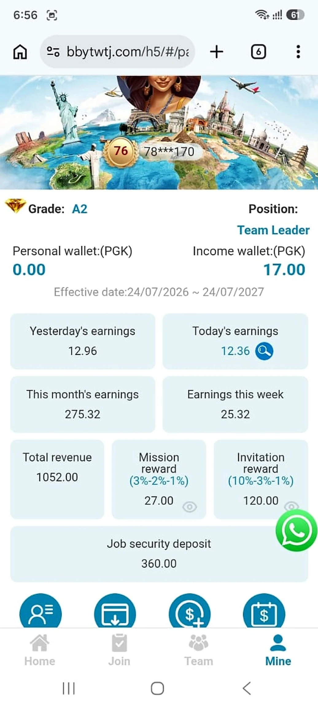

Join by referral
Participants describe joining through a WhatsApp link from a manager or team leader.
A visual look at TWT / Global Tradewinds Tours: how its registration, daily tasks, account balances and reported withdrawals are presented.

Independent information and awareness. Screenshots show claims and figures displayed inside the platform, not independently verified bank payments or proof of legitimacy. Upfront deposits, task commissions and recruitment rewards can carry significant financial risk.
Choose the language that suits you. All videos use the supplied TWT screenshots and narration.
An overview of registration, deposits, tourism-rating tasks, commissions, withdrawals and the importance of verification.
All 14 original captures, carefully resized and sharpened for display. Select any image to see it in detail.
Participants describe joining through a WhatsApp link from a manager or team leader.
The platform presents membership levels such as A1, A2 and A3 with a job security deposit.
Daily tasks involve rating hotels, attractions and tourism destinations.
The interface shows earnings, balances, recruitment rewards and withdrawal records.